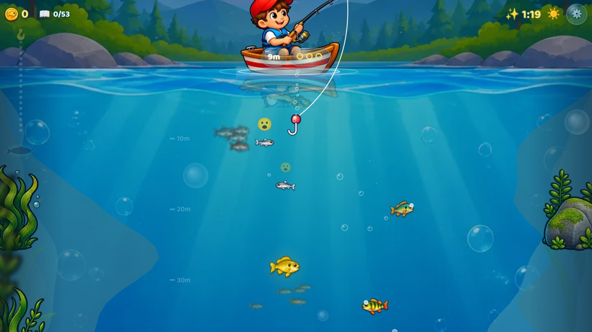
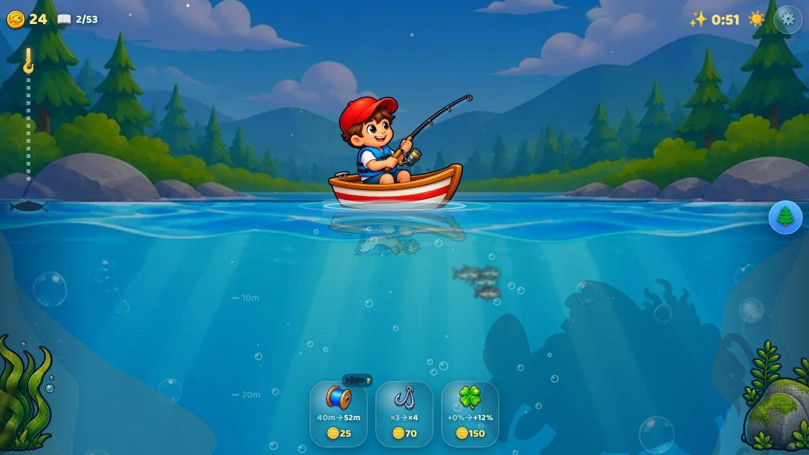
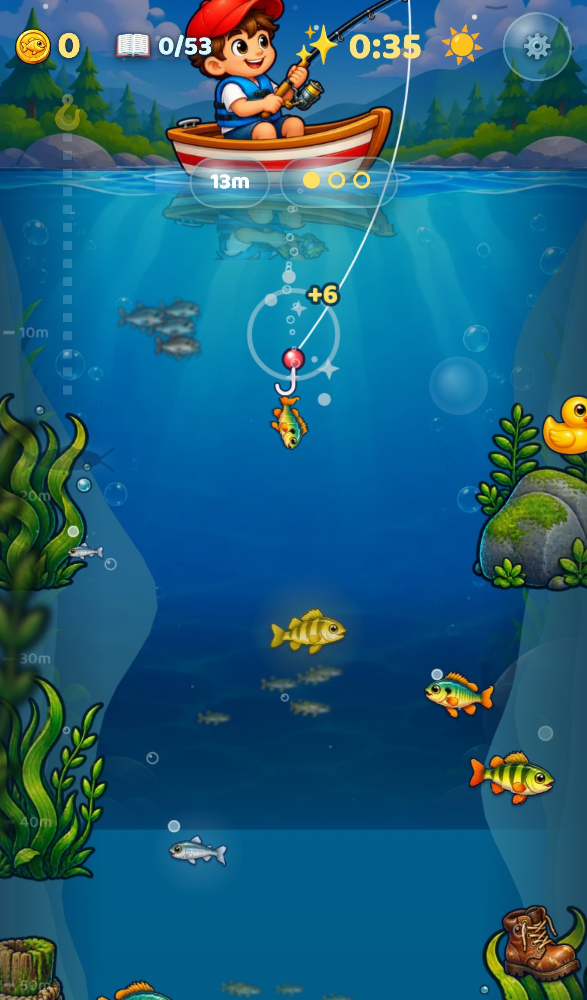
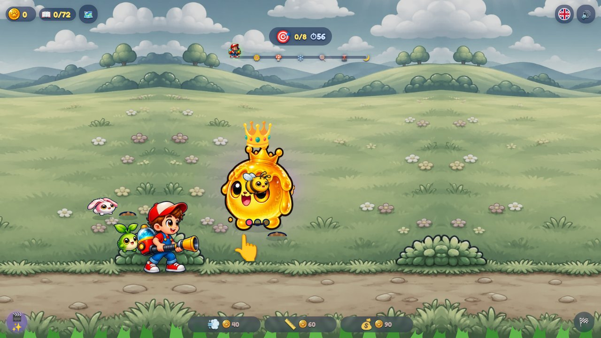
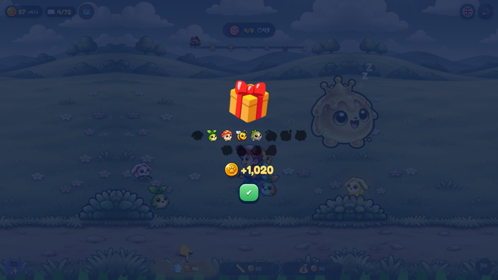
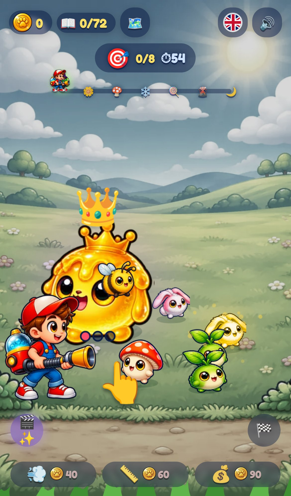

Deep Luck and Critter Vac are finished HTML5 games for kids and families. Each one is played with one thumb and needs no reading, runs on phones and desktop, and already has the Poki SDK built in.
Tap to cast, steer the hook down past the fish, then catch everything on the way up. Every catch pulls your line closer to the giant Legend of each sea: hold on, strike on time and land it.



A kid with a toy vacuum dreams of catching the Moon. Hold and aim to suck up adorable critters, grow your vacuum, and when a giant wakes up, win the tug of war and watch it stretch like taffy into your nozzle.


